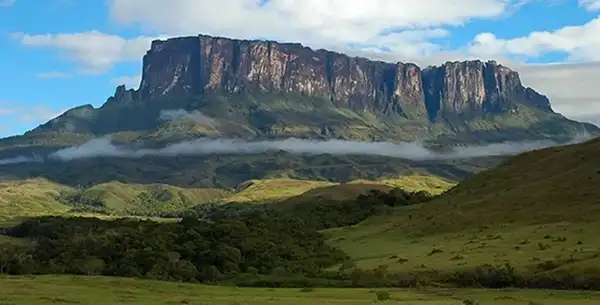
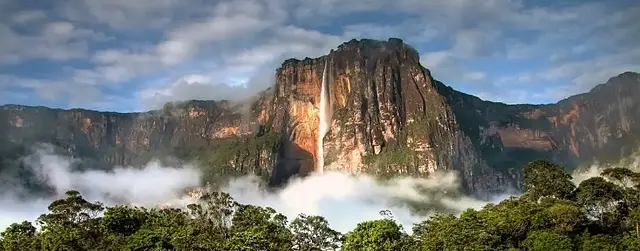
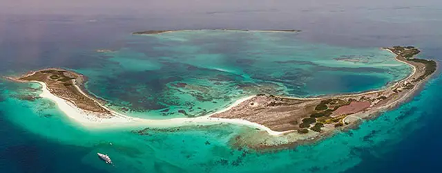

Venezuela, Land of Grace
Welcome to Venezuela! Explore our unmatched ecological diversity, from ancient rainforests to pristine Caribbean shores.


Angel Falls
Angel Falls is the world's tallest uninterrupted waterfall, located in Canaima National Park. Its majestic drop and lush jungle surroundings offer an unforgettable, breathtaking adventure for nature lovers.

Los Roques Archipelago
Los Roques is a pristine Caribbean archipelago with crystal-clear turquoise waters and vibrant coral reefs. It is an idyllic paradise perfect for snorkeling, sailing, and ultimate relaxation on white-sand beaches.
The Coro Dunes
Los Médanos de Coro features stunning, massive golden sand dunes right next to the city. It is a unique, mesmerizing landscape ideal for sandboarding, ATV rides, and spectacular sunset photography.